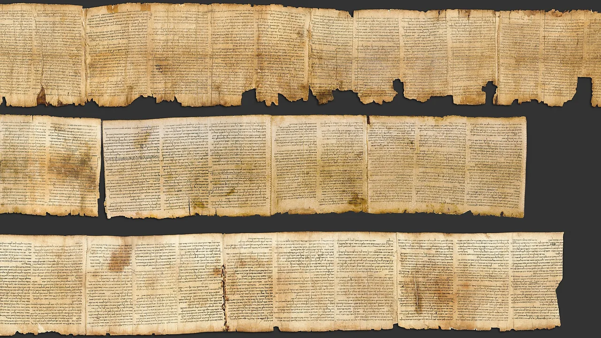
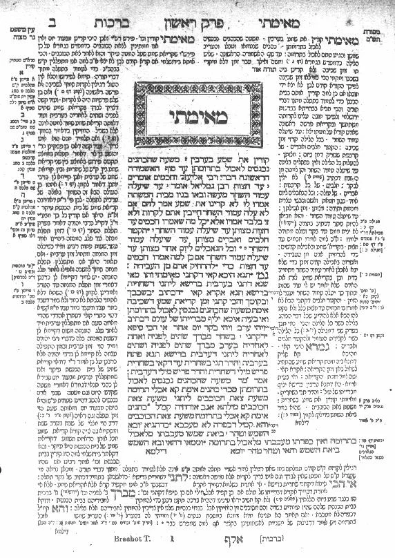
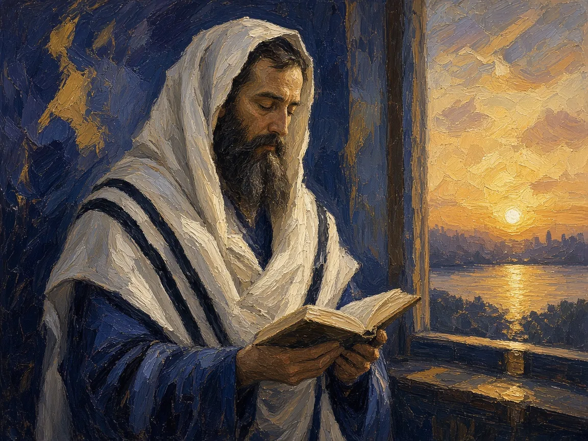
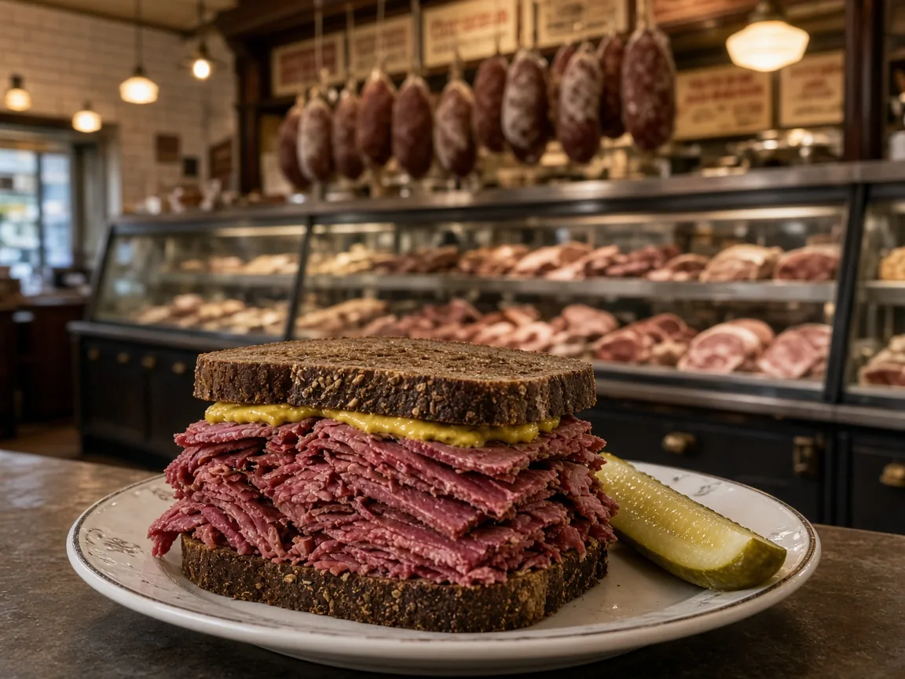
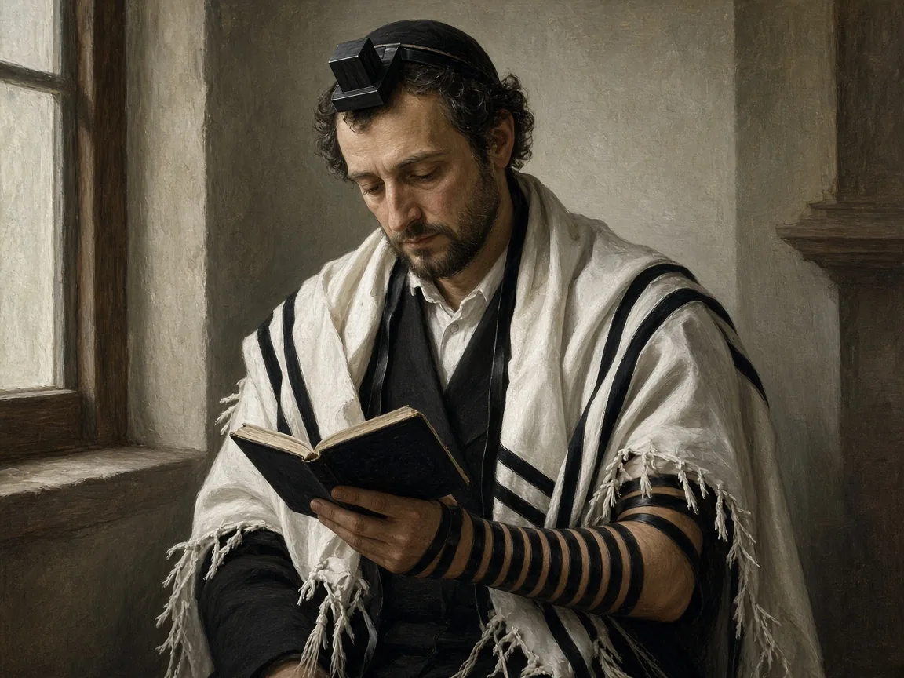
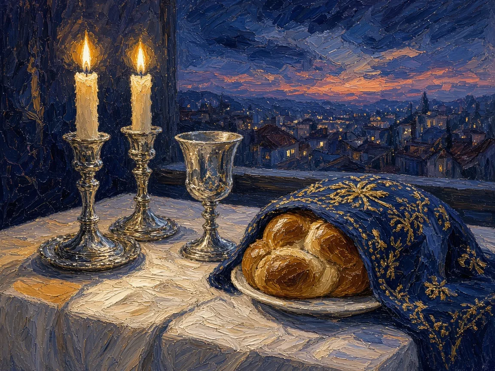
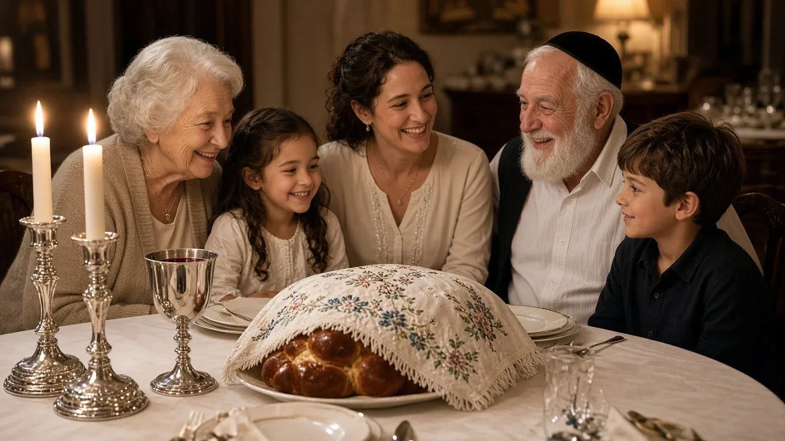
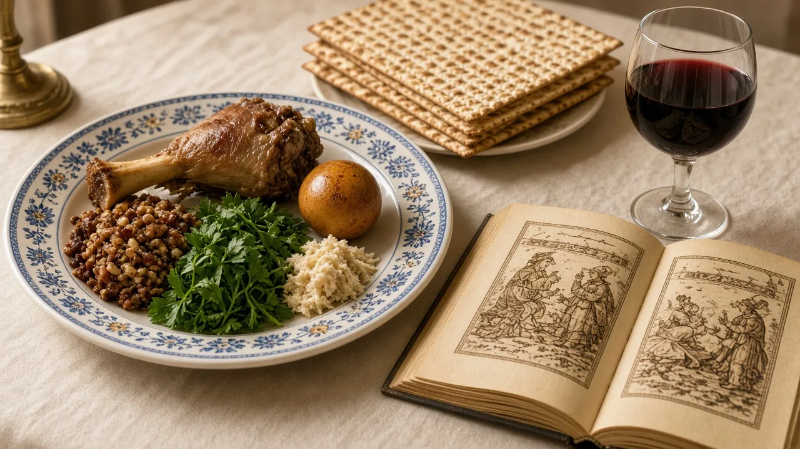
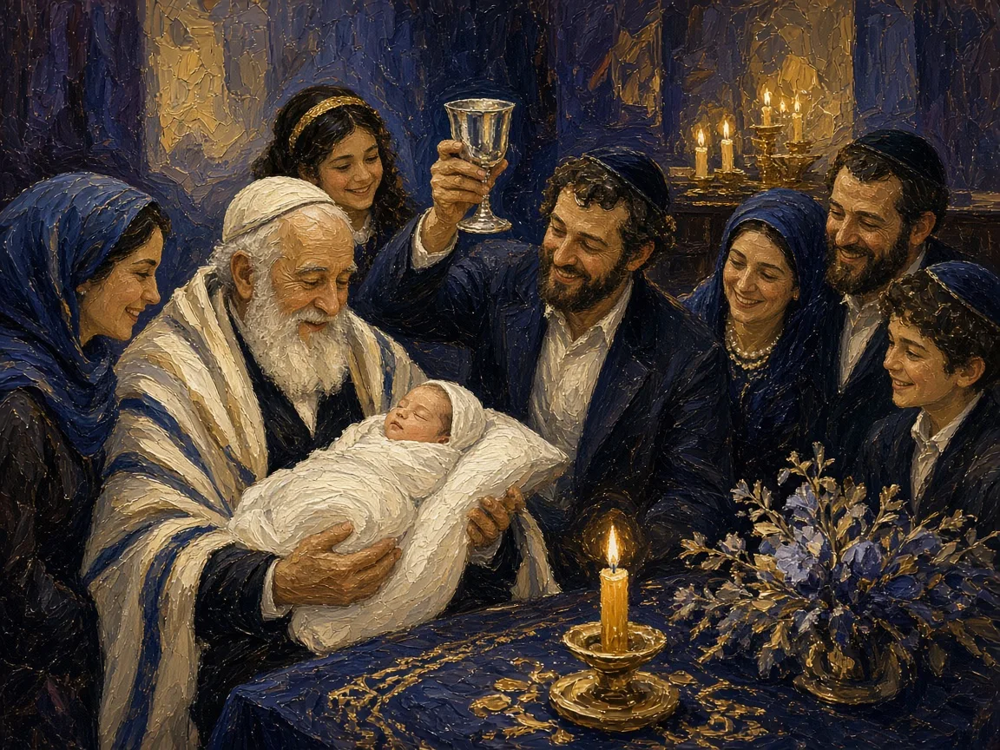
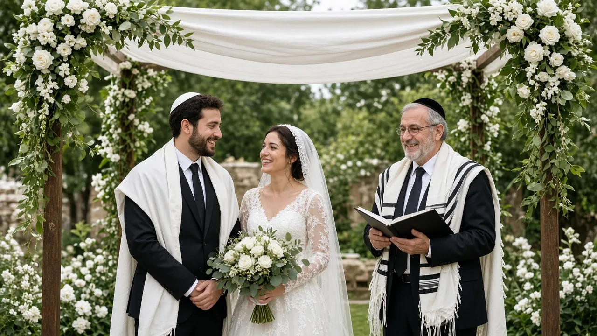

Torah: More Than “Law”
Instruction
The Hebrew word torah means teaching, guidance, or instruction.
Five Books
In its narrowest sense, Torah means Genesis through Deuteronomy.
Written Teaching
The term may extend to the Tanakh and the inherited scriptural tradition.
Living Tradition
In its broadest sense, Torah includes study, interpretation, and a way of life.
Torah teaches a people how to remember, interpret, and live.
The Tanakh: Three Collections
Torah
Instruction: Genesis, Exodus, Leviticus, Numbers, and Deuteronomy.
Nevi’im
Prophets: historical narratives and prophetic voices calling Israel to covenant faithfulness.
Ketuvim
Writings: poetry, wisdom, festival scrolls, and historical works.

Great Isaiah Scroll (1QIsaa), Qumran, probably 2nd century BCE (detail). Photo: Ardon Bar Hama, public domain, via Wikimedia Commons
TaNaKh = Torah + Nevi’im + Ketuvim
Arrangement is interpretation: the order of books helps tell a distinctly Jewish story.
Written Torah & Oral Torah
Moses received the Torah at Sinai and transmitted it to Joshua, Joshua to the elders, and the elders to the prophets, and the prophets to the Men of the Great Assembly.
Mishnah Avot 1:1 (trans. Joshua Kulp, Mishnah Yomit)
Written Torah
Scriptural text—especially the Five Books of Moses—copied, read, and transmitted in Hebrew.
Oral Torah
Interpretive traditions explaining how commandments apply to changing circumstances.
Rabbinic Judaism treats text and interpretation as mutually dependent.
Mishnah, Gemara & Talmud
Mishnah
Given its final form by Rabbi Judah ha-Nasi early in the third century CE; six orders of law.
Gemara
Later rabbis analyze the Mishnah through cases, objections, stories, and debate.
Babylonian Talmud
Completed about 600 CE; the larger and more authoritative of two Talmuds.

Printed Talmud page, Berakhot 2a: Mishnah and Gemara in the center, Rashi and Tosafot around them. Public domain, via Wikimedia Commons
Mishnah + Gemara = Talmud
The page preserves argument—not just the winning answer. The oven of Akhnai
Midrash: Reading between the Lines
- Method: close reading connects words, repetitions, gaps, and apparent contradictions
- Halakhic midrash: derives or clarifies legal practice from scripture
- Aggadic midrash: explores narrative, theology, ethics, and imaginative possibilities
- Plurality: multiple interpretations can remain in conversation rather than collapse into one
Study Is a Religious Practice
Reading Aloud
Text is often chanted, voiced, and heard rather than consumed silently.
Havruta
Partners test interpretations through questioning, objection, and response.
Bet Midrash
The house of study makes learning a communal activity.
Lifelong Obligation
Torah study is not limited to clergy or childhood education.
AI-generated image: havruta partners in a house of study
That which is hateful to you do not do to another; that is the entire Torah, and the rest is its interpretation. Go study.
Hillel, to a man who asked to learn the whole Torah “on one foot” (Shabbat 31a)
Mitzvot: Commandments as Covenant Practice
- 613: rabbinic tradition counts 248 positive and 365 negative commandments (see Lecture 2, slide AC)
- Whole life: worship, food, labor, family, courts, land, and ethics
- Temple limits: some cannot be performed without the Temple or ancient institutions
- Movement differences: communities disagree about authority, interpretation, and obligation
AI-generated image: charity, Shabbat, food, study, and prayer on one table
Practice turns covenant from an identity claim into a pattern of action.
Halakhah: A Way of Walking
Meaning
Halakhah comes from a root meaning to walk or go: a path of Jewish life.
Sources
Torah, Talmud, legal codes, customs, precedents, and responsa guide decisions.
Application & Diversity
Law meets new technologies and dilemmas; communities differ over who decides what is binding.
AI-generated image: halakhah as “a way of walking”
Law is not only a rulebook; it is a disciplined way of inhabiting the world.
Leviticus 19
The Holiness Code: “You Shall Be Holy”
You shall be holy, for I the Lord your God am holy.
Leviticus 19:2 (NRSV)
- Recall Lecture 2, slide X: the rabbis read this verse as a call to imitate God’s ways
- Now: what that holiness looks like in ritual and in ethics (next slide)
The Holiness Code: Sacred & Ordinary
- Ritual: Sabbath, sacrifice, food, sexuality, and sacred boundaries
- Ethics: wages, courts, disability, speech, neighbors, strangers, and the poor

AI-generated image: prayer at sunset
Holiness is not escape from ordinary life; it is the sanctification of ordinary life.
Leviticus 18 & 20
Holiness and the Body: Sexual Boundaries
- The Holiness Code (Lev 17–26) forbids incest, adultery, sex during menstruation, male–male intercourse, and bestiality as marks of a set-apart people.
- These acts defile the land itself. Sexuality concerns the whole community’s holiness, not only private morality. Jewish readings today
You shall not do as they do in the land of Egypt, where you lived, and you shall not do as they do in the land of Canaan, to which I am bringing you. You shall not follow their statutes.
Leviticus 18:3 (NRSV)
Otherwise the land will vomit you out for defiling it, as it vomited out the nation that was before you.
Leviticus 18:28 (NRSV)
In Leviticus, the body is part of the covenant: holiness reaches the bedroom, the family, and the land.
Temple Sacrifice & Its Transformation
Burnt Offering
Wholly burned on the altar as devotion or atonement [“burnt offering,” Lev 1].
Well-Being Offering
Shared at a meal of thanksgiving or a vow [“sacrifice of well-being,” Lev 3].
Purification / Reparation
Repair after impurity or wrongdoing [“sin offering,” “guilt offering,” Lev 4–5].

AI-generated artistic reconstruction of the Temple altar; the details are conjectural
My son, be not grieved, for we have another means of atonement which is as effective, and that is, the practice of lovingkindness.
Rabban Yohanan ben Zakkai, at the Temple ruins after 70 CE (Avot de-Rabbi Natan 4:5)
Kashrut: Making Food Sacred
- Kosher means fit or proper according to Jewish dietary law
- Permitted land animals chew the cud and have split hooves; aquatic animals require fins and scales
- Meat requires prescribed slaughter and preparation; meat and dairy are kept separate
- Passover adds rules against leavened grain products

AI-generated image: a Jewish-style deli sandwich (not necessarily kosher)
Texts Worn, Touched & Remembered
Mezuzah
Scriptural passages in a case on the doorpost mark the home with covenant memory.
Tefillin
Small boxes containing Torah passages are bound to arm and head during weekday prayer.
Tzitzit
Fringes on a garment or prayer shawl serve as physical reminders of commandments.
Berakhot
Blessings connect food, time, natural events, and human action to gratitude toward God.

AI-generated image: weekday morning prayer with tallit, tzitzit, and tefillin
Sacred words move from page to body, doorway, table, and time.
Worship in the Synagogue
- Ark: sacred cabinet holding Torah scrolls, oriented toward Jerusalem when possible
- Service: blessings, hymns, Hebrew prayer, Torah reading, interpretation, and communal response

AI-generated image: ark, Torah scrolls, and reading table
Worship in the Synagogue
Who Leads, Who Counts
- Leadership: cantor leads musical prayer; rabbi teaches and interprets; community participation remains central
- Minyan: prayer quorum traditionally counted as ten adult Jewish men; many communities count adults of all genders
AI-generated image: a cantor (hazzan) leading prayer
Shabbat: The Meaning of Sacred Rest
- Creation: rest imitates the seventh day and recognizes the world as gift
- Liberation: Deuteronomy links rest to freedom from slavery in Egypt
- Dignity: household, workers, strangers, and animals all rest
- Covenant sign: recurring sacred time marks Jewish identity every week

AI-generated image: Shabbat candles, kiddush cup, and challah at dusk
Shabbat is not simply a day off; it is freedom practiced every week.
Shabbat as Lived Practice
- Shabbat runs from just before sunset on Friday to nightfall on Saturday, when Havdalah ends it
- Home rituals may include candle lighting, blessings over wine, challah, a festive meal, and song
- Traditional law forbids 39 kinds of creative work (melakhah), such as kindling a fire or writing

AI-generated image: Friday-night Shabbat table
The Sacred Year: Major Festivals
Return & Atonement
Rosh Hashanah begins a season of reflection. Yom Kippur centers fasting, confession, and reconciliation.
Pilgrimage Festivals
Passover remembers Exodus. Shavuot celebrates Torah. Sukkot recalls wilderness dependence and harvest.
Deliverance & Identity
Purim retells Esther: Haman cast pur, “the lot,” to pick a day to destroy the Jews. Hanukkah remembers the Temple’s rededication.
AI-generated image: a family sukkah, with lulav and etrog (myrtle and willow not visible)
The calendar turns collective memory into repeated practice.
Passover Seder: Memory Performed
Haggadah
A scripted order combines biblical passages, rabbinic interpretation, songs, and blessings.
Questions
A child (by custom, the youngest) asks why this night differs from all others.
Symbolic Foods
Matzah, bitter herbs, wine, and other foods make the Exodus story tangible.
Participation
Each generation is to see itself as personally leaving Egypt.
The story is preserved because every generation performs it anew.
Passover Seder
As Though You Left Egypt
In every generation a man is obligated to regard himself as though he personally had gone forth from Egypt.
Mishnah Pesachim 10:5 (trans. Joshua Kulp, Mishnah Yomit)
- The Mishnah grounds this in Exodus 13:8: “It is because of what the Lord did for me when I came out of Egypt” (NRSV)
- The seder places participants inside the story

AI-generated image: seder plate, matzah, and Haggadah
Life Cycle: Birth & Coming of Age
- Brit milah (circumcision): baby boys are circumcised on the eighth day as a sign of God’s covenant with Abraham (Genesis 17:10–12; see Lecture 2, slide T)
- Naming: girls, and boys at the brit, receive a Hebrew name; practices differ by family and movement
- Bar or bat mitzvah: at 13 (12 for girls in many communities) a young person becomes responsible for the commandments
- In the synagogue: called to the Torah for the blessing; often chants the reading, leads prayers, and gives a short talk
- Rituals tie milestones to Torah, family, and the Jewish people

AI-generated image: family gathered for a brit milah
Marriage: Chuppah & Ketubah
- The couple marries under a canopy (chuppah), often read as a symbol of their new home
- A marriage contract, the ketubah, sets out the husband’s obligations to his wife
- Blessings are said over wine, and the ceremony often ends with the breaking of a glass

AI-generated image: a wedding under the chuppah
Death, Mourning & Memory
- Burial is traditionally prompt, simple, and equal in dignity
- Shiva: seven-day period in which mourners withdraw from ordinary life and receive the community
- Kaddish: prayer praising God, recited by mourners
- Yahrzeit and memorial practices keep the deceased present in memory
AI-generated image: small stones left on a headstone
Beyond the lecture
From Temple to Synagogue
Optional Independent Study
Slides P and U show the Temple and the synagogue one slide each. The mini-lecture tells the story between them: two Temples and an exile, the first prayer houses, the priests’ daily service, Yohanan ben Zakkai at Yavneh, prayer in place of sacrifice, and synagogues from ancient mosaics to today.